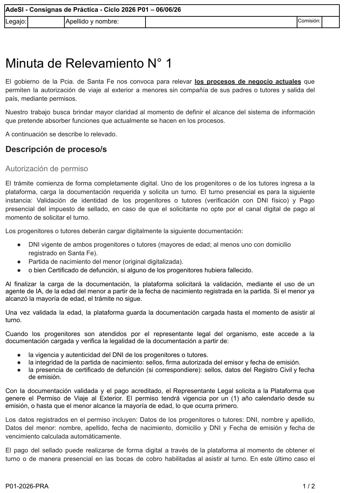
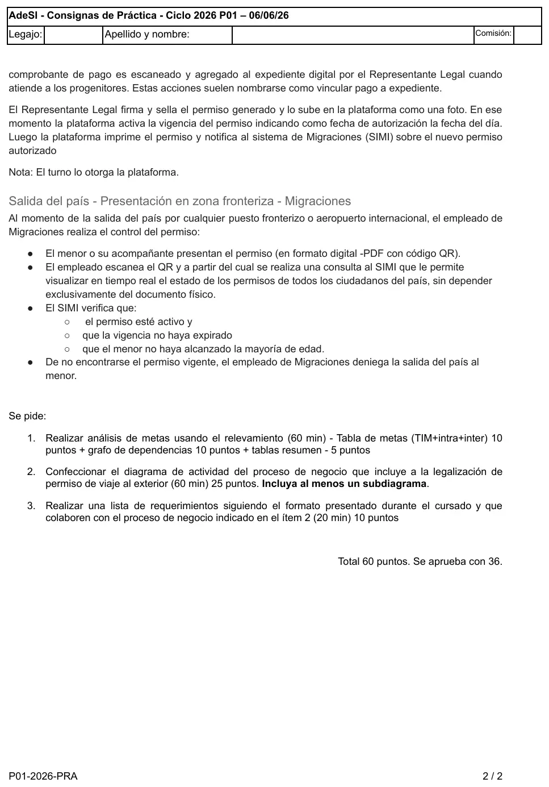

1° parcial, 06/06/2026. Permisos de viaje
1° parcial, 06/06/2026
Enunciado




Propuesta de respuesta
Respuesta no verificada. La propuso Luta Studios con inteligencia artificial y ningún docente la revisó. Puede tener errores.
1. Análisis de metas
Tabla de identificación de metas, con intra e inter. Va todo en una sola tabla, como permite el apunte de Análisis de Metas. Una línea en Funciones quiere decir que el sistema no colabora.
| Id | Actor | Actividad | Funciones | Meta | Análisis |
|---|---|---|---|---|---|
M01 | Progenitor o tutor | Cargar documentación, presentarse al turno | Registrar la solicitud con la documentación | Obtener permiso de viaje para el menor | Independiente |
M02 | Progenitor o tutor | Pagar el sellado en línea o en una boca de cobro | Registrar el pago en línea | Pagar impuesto de sellado | Intra, subordinada a M01 |
M03 | Progenitor o tutor | Solicitar turno | Otorgar el turno | Obtener turno | Intra, subordinada a M01 |
M04 | Representante legal | Verificar DNI, partida y certificado de defunción | Mostrar la documentación cargada | Validar documentación | Intra, subordinada a M06 |
M05 | Representante legal | Vincular pago a expediente | Registrar el comprobante en el expediente | Acreditar pago del sellado | Intra, subordinada a M06 |
M06 | Representante legal | Solicitar el permiso, firmarlo, sellarlo y subir la foto | Generar el permiso, calcular el vencimiento, activar la vigencia, imprimir y notificar al SIMI | Autorizar permiso de viaje | Inter, subordinada a M01 |
M07 | Menor o acompañante | Presentar el permiso en la frontera | — | Salir del país | Independiente |
M08 | Empleado de Migraciones | Escanear el QR y consultar el SIMI | — | Controlar permiso del menor | Inter, subordinada a M07 |
F01 | Empleado de Migraciones | Denegar la salida si el permiso no está vigente | — | Denegar salida del menor | Inter, obstáculo de M07 |
La validación de la edad con el agente de IA no está como meta porque la hace la plataforma, no un actor. Queda en Funciones de M01.
Grafo de dependencias. La flecha apunta a la meta que subordina. La meta obstáculo va punteada.
Tablas resumen.
| Actor primario | Meta independiente | Descripción breve | Otros actores | Proceso | Alcance |
|---|---|---|---|---|---|
| Progenitor o tutor | M01 Obtener permiso de viaje para el menor | Carga la documentación, saca turno, paga el sellado y el representante legal autoriza el permiso | Representante legal, SIMI | Autorizar permiso de viaje al exterior | Sistema |
| Menor o acompañante | M07 Salir del país | En la frontera presenta el permiso y el empleado lo controla contra el SIMI | Empleado de Migraciones, SIMI | Controlar salida del país | Fuera del sistema, lo resuelve el SIMI |
2. Diagrama de actividad
Es el proceso actual, con la plataforma como calle porque el relevamiento la describe como parte del trámite. «Verificar documentación» lleva el tridente y se despliega en un subdiagrama. Tocá el dibujo para verlo en pantalla completa.
3. Lista de requerimientos
Con la forma acción + objeto(s) + (para qué) + (para quién) + (comentarios imprescindibles).
| ID | Actor | Requerimiento |
|---|---|---|
R01 | Progenitor o tutor | Registrar solicitud de permiso de viaje con la documentación digitalizada (DNI de progenitores o tutores, partida de nacimiento y, si corresponde, certificado de defunción) para iniciar el trámite |
R02 | Progenitor o tutor | Validar que el menor no haya alcanzado la mayoría de edad a partir de la fecha de nacimiento de la partida, al terminar la carga |
R03 | Progenitor o tutor | Validar que los progenitores o tutores sean mayores de edad y que al menos uno tenga domicilio registrado en Santa Fe, al registrar la solicitud |
R04 | Progenitor o tutor | Generar turno presencial para validar la identidad y la documentación |
R05 | Progenitor o tutor | Registrar pago en línea del impuesto de sellado al obtener el turno |
R06 | Representante legal | Mostrar documentación cargada del trámite para verificar su legalidad, al atender a los progenitores |
R07 | Representante legal | Registrar comprobante del pago presencial en el expediente (vincular pago a expediente) |
R08 | Representante legal | Validar que el pago del sellado esté acreditado antes de generar el permiso |
R09 | Representante legal | Generar permiso de viaje al exterior con los datos de los progenitores o tutores y del menor, para firmarlo y sellarlo |
R10 | — | Calcular fecha de vencimiento del permiso como un año calendario desde la emisión, o el día en que el menor cumple la mayoría de edad si ocurre antes |
R11 | Representante legal | Registrar foto del permiso firmado y sellado y activar su vigencia con la fecha del día como fecha de autorización |
R12 | Representante legal | Emitir permiso autorizado para los progenitores o tutores |
R13 | — | Notificar permiso autorizado al SIMI, para que Migraciones lo controle en la salida del país |
Respuesta no verificada. Puede tener errores.
Se armó con la página del 1° parcial (análisis de metas, diagrama de actividad, subdiagramas y lista de requerimientos). La forma del diagrama sigue el del recuperatorio del 16/12/24 y la de la lista, la del 1° parcial del 28/06/25.
Quedó en duda: El material no muestra cómo dibuja la cátedra una meta obstáculo en el grafo: acá va punteada. Tampoco aclara si la plataforma y el SIMI van como calle o como actor, y si la salida del país entra en el alcance. Se tomó como un segundo proceso fuera del sistema. El relevamiento no dice qué pasa si la documentación no es válida, por eso esa rama termina en flujo final. El orden de los paréntesis del requerimiento cambia entre la plantilla y el teórico del 28/06/25.
¿Cómo te fue?
Marcá cada tema del examen.
- Análisis de metasAnálisis de metas, en 1° parcial
- Tabla resumenReestructuración de un caso de uso resumen, en 2° parcial
- Diagrama de actividadDiagrama de actividad, en 1° parcial
- RequerimientosRequerimientos, en 1° parcial